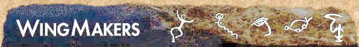

WingMakers, tedy èesky Tvùrci Køídel je nový fenomén, nebo nový mýtus, který vìtšinu z vás ovlivní. Nìkoho nastartuje, jiného pobaví.Doporuèuji, aby jste se nejprve seznámili s internetovou verzí dokumentù, které najdete na www stránkách:
http://www.wingmakers.com . . .originální anglické stránky
http://www.sweb.cz/wingmakers . . . èeský pøeklad z originálních www
http://www.lyricus.cz . . . materiály øádu Lyricus
http://www.chramyudalosti.cz . . .chrámy událostí
home.xtra.co.nz/hosts/Wingmakers/ . . anglicky cvièení od WM Darren - èeský pøeklad níže
nebo si mùžete stáhnout tento samorozbalovací archív, se všemi hlavními soubory v èeštinì ve formì MS word dokumentu, který jsem našel na webu. Pak si mùžete nainstalovat First Source z CD, nebo se hned pustit do níže uvedených pøekladù. Na CD First source vol. 1, najdete skladby z komor 1-9 v CD kvalitì, které pøehrajete na audio pøehrávaèi, obrazy z komor 1-10 ve velkém rozlišení, poezii, další kratší skladby, které vám budou hrát na pozadí, další obrázky a skrytá místa.Tedy nejen vše co je na webu, ale i mnoho dalšího, a nìkteré dokumenty jsou o dost jiné.
Když je zkombinována hudba s textem, aktivují ve vás nezapojené skryté kódy. Ještì navíc je to udìláno ve více vrstvách, takže vždy objevíte nìco nového.
Protože je CD anglicky, najdete níže èeské pøeklady, které mají stejný tvar i jméno a tak je mùžete jednoduše vymìnit a tak si udìlat èásteènì èeskou verzi.
Soubory z CD First Source |
|
Instalaèní program pøekladù - do již nainstalovaného e-book - First Source vol. 1 (obsahuje všechny výše uvedené soubory plus další texty ze skrytých oblastí). Nelze nainstalovat samostatnì.! Poslední aktualizace: 24.05.2001 |
|
Další pøeklady |
Dopis Jamese pro Justin Heatcote z konference Vizualizaèní cvièení podle Darren Prožitek Navigátora Celistvosti - Lyricus Jak pozvat Navigátora Celistvosti - Lyricus |
Chrámy událostí |
|
Našli jste všechny poschovávané dokumenty a obrázky v e-booku? V tomto dokumentu je zpracovaná mapa všech secrets. Aby to ale nebylo tak jednoduché, je potøeba zadat heslo. Trochu napovím: je to název jedné organizace a má 4 písmena (velká).